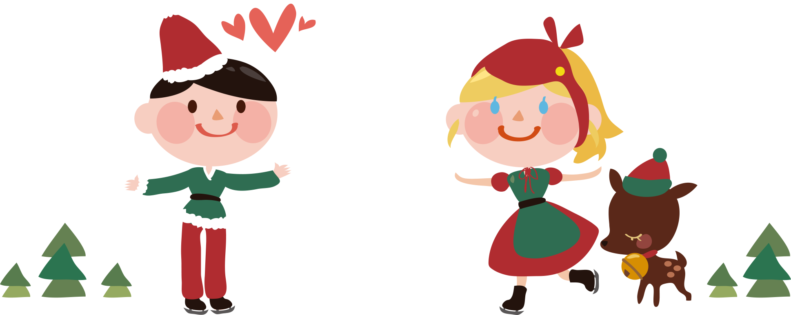
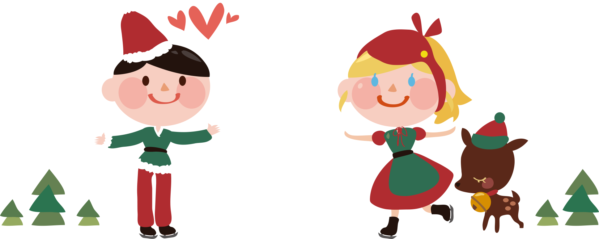

Om oss
English text

English text
Desember måned er forbundet med jul og koselige tider i vårt lille land Norge. Vi gleder oss alle sammen til å være med familien og ha en koselig jul. Vi ser frem til avslappende fridager med familie og venner, pynting av juletre og andre diverse hyggelige ting vi kan forbinde med juletiden. Men for 1/10 nordmenn i landet er ikke dette tilfellet. Disse 10% av befolkningen gruer seg til denne høytiden fordi man er alene. Ensomheten kommer ekstra frem rundt juletider for da er alle samlet med familie og venner. Og personer med kanskje anstrengt forhold til familien og ellers liten vennekrets blir sterkt rammet. Kirkens bymisjon og andre organisasjoner har muligheter for de som feirer julen alene. Det er tillegg mange privatpersoner som åpner dørene i juletida. Vi er heldige som har et så inkluderende samfunn. Vi har lyst til å utvikle den ideen om at privatpersoner åpner dørene i juletiden. Derfor har vi lyst til at alle skal ha et felles forum der vi kan invitere hvem som helst og samtidig kunne kartlegge de som sitter alene på julaften. Dette er en mulighet til de som har lyst til å gjøre juletiden mindre ensom for de som sliter med ensomheten. Vårt mål er at alle skal ha en fin jul og skal ha mulighet til å feire den med noen. Er du en av de som har lyst til å være med på dette? Registrer deg gjerne her og inviter med deg en hjem i julen. God Jul!


 
